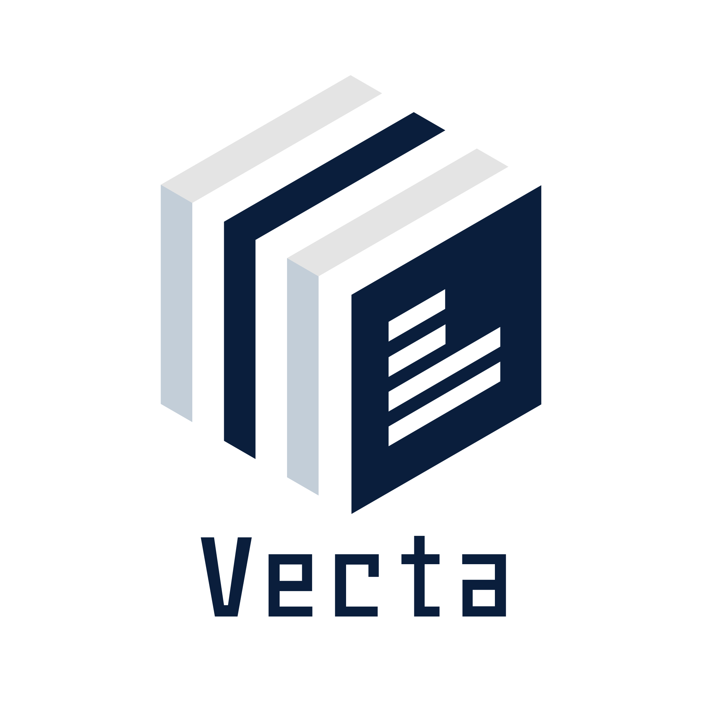

SwarrowCallのご紹介
SwarrowCallのご紹介
株式会社Vecta
会社紹介

- SwarrowCall事業（AIサポートセンターサービス）
-
開発受託事業
- Webシステム
- モバイルアプリ
- AI基盤
SwarrowCallが生まれた背景
自治体業務の支援に携わる中で、複数の部署の方から共通して以下のような声を伺いました。
- 電話が集中する時期は対応に追われて、事務作業がまったく進まない
- 同じ案内を一日に何度も繰り返している
- 連絡しなければいけない対象者に対して、電話をかけきれない
こうした定型的な部分をAIが受け持てれば、職員の皆様の負担を減らせるのではないか。その考えからSwarrowCallの開発に至りました。
問い合わせ対応/連絡業務の課題
自治体の電話窓口では、一次受付、定型案内、対象者への連絡の負荷が重なり、職員の時間が案内業務に取られやすいと伺っています。
| 代表電話の一次受付と担当課案内に時間がかかる | どの課に相談すべきか分からない問い合わせが代表電話に集まり、用件の聞き取り、担当課の確認、転送までのやり取りに時間がかかりやすい |
| 開庁時間外や繁忙時に受けきれない | 開庁時間外や繁忙時は電話を受けきれず、翌日の再入電や折り返し対応が増えやすい |
| つながらないことが来庁時の手戻りにつながる | 電話がつながらないことで不安や不満が残り、予約なし来庁や必要書類が不足したままの来庁が発生しやすい |
| 定型的な案内が何度も繰り返される | マイナンバー、保険、子育て、ごみ分別など、回答パターンが近い問い合わせが繰り返し寄せられ、個別対応に時間を回しにくい |
| 健診案内や納付勧奨の連絡を必要な件数だけ実施しきれない | 健診案内、督促、見守りなどは対象件数が多く、職員の個別架電だけでは十分な件数を実施しにくい |
3つの主な機能
AI受電
代表電話の一次受付と時間外対応を24時間自動化します。
AIチャット
HPや公式LINEで自己解決を促進します。
AI架電
対象者への一斉連絡を自動で実行します。
Vectaの提案する課題解決
Vectaは、AI受電・AIチャット・AI架電を一つの仕組みでつなぎ、窓口業務の負担を軽減します。
| 代表電話の一次受付と担当課案内に時間がかかる |
AI受電
代表電話の一次受付を自動化し、用件の聞き取り、担当課案内、必要に応じた転送までを整理する
|
| 開庁時間外や繁忙時に受けきれない |
AI受電
24時間365日の一次受付で、閉庁後や繁忙時でも問い合わせの入口を止めずに受け付ける
|
| つながらないことが来庁時の手戻りにつながる |
AI受電 + AIチャット
混雑時でも音声案内とHP/公式LINEへの誘導を組み合わせ、自己解決や事前確認につなげる
|
| 定型的な案内が何度も繰り返される |
AI受電 + AIチャット
音声案内とHP/公式LINEのチャットで、よくある質問への自己解決を増やす
|
| 健診案内や納付勧奨の連絡を必要な件数だけ実施しきれない |
AI架電
健診案内、納付勧奨、見守りなどの電話連絡を自動化し、職員だけでは回しにくい件数の連絡業務をまとめて実行する
|
AI受電
AI受電は、代表電話の一次受付や時間外対応を自動化し、電話集中をやわらげます。
どの課に相談すべきか分からない問い合わせも含めて受け止め、代表電話への集中をやわらげます。
閉庁後や繁忙時でも入口を止めずに受け付け、翌日の再入電や折り返し対応を減らしやすくします。
よくある質問への回答、窓口案内、担当課の案内や必要に応じた転送まで一連で対応できます。
予約希望日時や手続き内容、連絡先を聞き取り、来庁予約や折り返し受付につなげられます。
AI受電の自治体活用例
AI受電は、代表電話への集中や時間外の取りこぼしが起きやすい領域から導入しやすいです。
代表電話
- 開庁時間の案内
- 担当課の案内
- 適切な部署への転送
- 窓口予約希望の受付
住民
- マイナンバーカードの受取、暗証番号再設定、電子証明書更新の案内
- 受取や更新手続きの来庁予約受付
子育て
- 児童手当、保育園、母子保健の制度案内
- 健診・予防接種に関する案内
- 子育て窓口や担当課の案内
税務
- 納期限、納付方法の案内
- 納税証明や手続き窓口の案内
高齢者福祉
- 介護保険や福祉サービスに関する制度案内
- 申請窓口や必要書類、担当課の案内
- 相談窓口や折り返し受付の一次対応
健康増進
- 健診・がん検診の日程、会場、持ち物の案内
- 予防接種や保健相談の窓口案内
- 予約変更や受診票に関する一次受付
AIチャット
AIチャットは、定型的な案内を自己解決につなげ、電話が集中しやすい問い合わせを分散します。
よくある手続き案内やFAQを電話前に解決し、同じ説明が繰り返される負荷を減らします。
住民が使いやすい導線に合わせて配置し、混雑時でも自己解決先を案内できます。
既存資料を参照して回答しつつ、会話ログを見ながらFAQや回答ルールを調整できます。
AIチャットの自治体活用例
AIチャットは、定型的な案内が繰り返される領域ほど効果を出しやすいです。
住民課
- 住民票、戸籍、転入転出の手続き案内
- マイナンバーカードの申請、受取予約、暗証番号、電子証明書に関するFAQ
ごみ・環境
- 分別ルール、収集日、粗大ごみ受付案内
子育て・福祉
- 手当、保育園、健診、予防接種のFAQ対応
観光・イベント
- 施設情報、イベント案内
- 多言語一次対応
AI架電
AI架電は、健診案内や納付勧奨など、件数の多い連絡業務をまとめて自動化できます。
健診案内や納付勧奨など、職員だけでは回しにくい件数の電話連絡をまとめて実施できます。
督促前の納付勧奨や健診前のリマインドなど、必要なタイミングでの連絡を実行しやすくします。
相手の反応に応じた確認結果の回収や、SMS送信、後続の連絡フローまでつなげられます。
AI架電の自治体活用例
AI架電は、連絡件数が多く人手では対応しきれない業務ほど導入効果が出やすいです。
健康増進
- 健診、面談、予防接種のリマインド連絡
税務・保険
- 納付勧奨や納期限前のお知らせ
- 口座振替不能時や書類提出の促進連絡
介護・福祉
- 高齢者の安否確認
- 訪問前確認
防災・危機管理
- 緊急時や訓練時の一斉確認連絡
精度と安全性
文書読み取りと運用チューニングの組み合わせで、回答精度を継続的に高められる設計です。
高精度回答のための設計
安全性
- やり取り内容や登録データは、外部AIプロバイダの学習に利用されません。
- 既存のFAQや業務資料をもとに、組織ごとの情報に沿った回答を返します。
- 答えにくい内容は無理に返さず、人に戻すことで実運用品質を担保します。
- 会話ログやFAQ更新を見ながら、回答ルールを継続的に調整できます。
導入の流れ・実証実験
ヒアリングからセットアップまで弊社が伴走し、実証実験から本番運用への移行を支援します。
ヒアリング
対象部署、対象業務、対象チャネルを決め、現状のFAQや資料を確認します。
セットアップ
資料投入、導線設定、応答ルール調整を行い、実証実験の準備を進めます。
運用開始
応答率、引き継ぎ率、削減工数を見ながら、他部署への横展開を判断します。